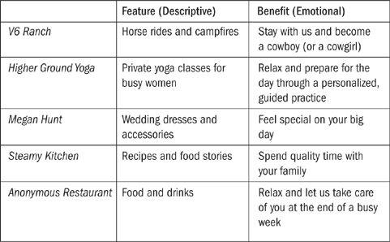
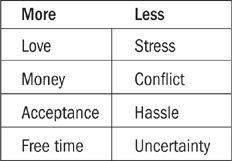

“Catch a man a fish, and you can sell it to him.
Teach a man to fish, and you ruin
a wonderful business opportunity.”
—KARL MARX
Along with some of the other stories mentioned briefly in Chapter 1, we’ll return to the Jamestown Coffee Company as we go along. But first, let’s consider a key principle of building your way to freedom through a microbusiness based on a skill, hobby, or passion. The hard way to start a business is to fumble along, uncertain whether your big idea will resonate with customers. The easy way is to find out what people want and then find a way to give it to them.
Another way to consider it is to think about fish.
Picture this scenario: It’s Friday night, and you head out to a nice restaurant after a long week of work. While you’re relaxing over a glass of wine, the waiter comes over and informs you of the special. “We have a delicious salmon risotto tonight,” he says. “That sounds perfect,” you think, so you order the dish. The waiter jots it down and heads back toward the kitchen as you continue your wine and conversation.
So far, so good, right? But then the chef comes out and walks over to your table. “I understand you’ve ordered the salmon risotto,” she says as you nod in affirmation. “Well, risotto is a bit tricky, and it’s important we get the salmon right, too … Have you ever made it before?” Before you can respond, the chef turns around. “Tell you what, I’ll go ahead and get the olive oil started.… You wash up and meet me back in the kitchen.”
I’m guessing this experience has never happened to you, and I’m also guessing that you probably wouldn’t enjoy it if it did. After getting past the initial surprise (Does the chef really want me to come back into the kitchen and help prepare the food?), you’d probably find it very odd. You know that the food in the restaurant costs much more than it would in the grocery store—you’re paying a big premium for atmosphere and service. If you wanted to make salmon risotto yourself, you would have done so. You didn’t go to the restaurant to learn to make a new dish; you went to relax and have people do everything for you.
What does this scenario have to do with starting a microbusiness and plotting a course toward freedom? Here’s the problem: Many businesses are modeled on the idea that customers should come back to the kitchen and make their own dinner. Instead of giving people what they really want, the business owners have the idea that it’s better to involve customers behind the scenes … because that’s what they think customers want.
It’s all the fault of the old saying: “Give a man a fish and he’ll eat for a day. Teach a man to fish and he’ll eat for a lifetime.” This might be a good idea for hungry fishermen, but it’s usually a terrible idea in business. Most customers don’t want to learn how to fish. We work all week and go to the restaurant so that someone can take care of everything for us. We don’t need to know the details of what goes on in the kitchen; in fact, we may not even want to know the details.
A better way is to give people what they actually want, and the way to do that lies in understanding something very simple about who we are. Get this point right, and a lot of other things become much easier.
For fifteen years, John and Barbara Varian were furniture builders, living on a ranch in Parkfield, California, a tiny town where the welcome sign reads “Population 18.” The idea for a side business came about by accident after a group of horseback riding enthusiasts asked if they could pay a fee to ride on the ranch. They would need to eat, too—could John and Barbara do something about that? Yes, they could.
In the fall of 2006, a devastating fire burned down most of their inventory, causing them to reevaluate the whole operation. Instead of rebuilding the furniture business (no pun intended), they decided to change course. “We had always loved horses,” Barbara said, “so we decided to see about having more groups pay to come to the ranch.” They built a bunkhouse and upgraded other buildings, putting together specific packages for riding groups that included all meals and activities. John and Barbara reopened as the V6 Ranch, situated on 20,000 acres exactly halfway between Los Angeles and San Francisco.
Barbara’s story stood out to me because of something she said. I always ask business owners what they sell and why their customers buy from them, and the answers are often insightful in more ways than one. Many people answer the question directly—“We sell widgets, and people buy them because they need a widget”—but once in a while, I hear a more astute response.
“We’re not selling horse rides,” Barbara said emphatically. “We’re offering freedom. Our work helps our guests escape, even if just for a moment in time, and be someone they may have never even considered before.”
The difference is crucial. Most people who visit the V6 Ranch have day jobs and a limited number of vacation days. Why do they choose to visit a working ranch in a tiny town instead of jetting off to lie on a beach in Hawaii? The answer lies in the story and messaging behind John and Barbara’s offer. Helping their clients “escape and be someone else” is far more valuable than offering horse rides. Above all else, the V6 Ranch is selling happiness.
On the other side of the country, Kelly Newsome was a straight-A student and an ambitious Washington, D.C., career climber. By the time she started college, she already had the goal of big career achievement in mind. From the top of her class at the University of Virginia School of Law, she went on to a high-paying job as a Manhattan lawyer—her dream for more than six years. Alas, Kelly soon discovered that dutifully checking the company’s filings for compliance with the Securities Act day in and day out wasn’t exactly what she had hoped for back in law school. After the high of scoring her dream job wore off and the reality of being a well-paid paper pusher set in, Kelly wanted a change.
Abandoning her $240,000-a-year corporate law gig five years in, Kelly left for a new position at Human Rights Watch, the international charity. This job was more fulfilling than the moneymaking job, but it also helped her realize that she really wanted to be on her own. Before the next change, Kelly took time off and traveled the world. Yoga had always been a passion for her, and during her time away, she underwent a two-hundred-hour training course, followed by teaching in Asia and Europe. The next step was Higher Ground Yoga, a private practice she founded back in Washington, D.C. There were plenty of yoga studios in D.C., but Kelly wanted to focus on a specific market: busy women, usually executives, ages thirty to forty-five and often with young children or expecting. In less than a year, Kelly built the business to the $50,000+ level, and she’s now on track for more than $85,000 a year.
The practice has its weaknesses—during a big East Coast “snowpocalypse,” Kelly was unable to drive to her appointments for nearly three weeks, losing income for much of that time. Despite the lower salary and the problem of losing business during bad weather, Kelly says she wouldn’t return to her old career. Here’s how she put it: “One time when I was a lawyer, having just worked with an outstanding massage therapist, I said to her, ‘It must be so great to make people so happy.’ And it is.” Like Barbara and John in California, Kelly discovered that the secret to a meaningful new career was directly related to making people feel good about themselves.
Where Do Ideas Come From?
As you begin to think like an entrepreneur, you’ll notice that business ideas can come from anywhere. When you go to the store, pay attention to the way they display the signage. Check the prices on restaurant menus not just for your own budget but also to compare them with the prices at other places. When you see an ad, ask yourself: What is the most important message the company is trying to communicate?
While thinking like this, you’ll notice opportunities for microbusiness projects everywhere you go. Here are a few common sources of inspiration.
An inefficiency in the marketplace. Ever notice when something isn’t run the way it should be, or you find yourself looking for something that doesn’t exist? Chances are, you’re not the only one frustrated, and you’re not the only one who wants that nonexistent thing. Make what you want to buy yourself, and other people will probably want it too.
New technology or opportunity. When everyone started using smart phones, new markets cropped up for app developers, case manufacturers, and so on. But the obvious answer isn’t the only one: Makers of nice journals and paper notebooks also saw an uptick in sales, perhaps in part because of customers who didn’t want everything in their lives to be electronic.
A changing space. As we saw with Michael’s example in Chapter 1, car dealerships were going out of business, and he was able to rent his first temporary mattress space on the cheap. Not everyone would have thought of locating a mattress shop in a former car dealership, but Michael grabbed the opportunity.
A spin-off or side project. One business idea can lead to many others. Whenever something is going well, think about offshoots, spin-offs, and side projects that could also bring in income. Brandon Pearce, whom we’ll see more of in Chapter 4, founded Studio Helper as a side project to his main business of Music Teacher’s Helper. It now brings in more than $100,000 a year on its own.
Tip: When thinking about different business ideas, also think about money. Get in the habit of equating “money stuff” with ideas. When brainstorming and evaluating different projects, money isn’t the sole consideration—but it’s an important one. Ask three questions for every idea:
a. How would I get paid with this idea?
b. How much would I get paid from this idea?
c. Is there a way I could get paid more than once?
We’ll look at money issues more in Chapters 10 and 11.
The stories of the V6 Ranch and Higher Ground Yoga are good examples of how freedom and value are related. In California, John and Barbara found a way to pursue the outdoor lives they wanted by inviting guests to make the ranch their escape. Meanwhile, even though Kelly makes less money (at least for now) in her new career, her health is better and she does work she enjoys—a trade-off she was happy to make. Freedom was Kelly’s primary motivation in making the switch, but the key to her success is the value she provides her clients.
Let’s stop for a moment and look at the concept of value, a word that is often used without much exploration. What is value, exactly? Here’s a basic definition:
val-ue: something desirable and of worth, created through exchange or effort
In our context, an even easier way to think about it is: Value means helping people. If you’re trying to build a microbusiness and you begin your efforts by helping people, you’re on the right track. When you get stuck, ask yourself: How can I give more value? Or more simply: How can I help my customers more? Freedom and value have a direct relationship: You can pursue freedom for yourself while providing value for others. As we saw in the discussion of convergence, a business ultimately succeeds because of the value it provides its end users, customers, or clients.
More than anything else, value relates to emotional needs. Many business owners talk about their work in terms of the features it offers, but it’s much more powerful to talk about the benefits customers receive. A feature is descriptive; a benefit is emotional. Consider the difference in the stories we’ve looked at in the chapter thus far. The V6 Ranch helps people “escape and be someone new.” Isn’t that more powerful than just offering a horse ride? Kelly’s private classes help busy female executives prepare for their day in a quiet setting, a much more meaningful and tailor-made experience than going to the gym with hundreds of other people.
We can apply the same thinking to the examples we briefly reviewed in Chapter 1. At its most basic level, we could say that Jaden Hair (founder of Steamy Kitchen) offers recipes on her website, but plenty of websites have recipes. A much stronger benefit, and the one that Jaden puts forward, is that her work helps families spend quality time making and enjoying delicious food. Similarly, Megan Hunt makes dresses, but that’s not the point: She also helps brides share in the anticipation, celebration, and memories of a perfect day. Who wouldn’t pay for that? The list below provides a contrast between features and benefits.*

This kind of analysis applies even to businesses that you might think of as boring or commodity-based. Michael Hanna (the mattress guy) talked with me about selling a mattress to a family with an infant and then seeing them return two years later with their three-year-old, who now needed to upgrade to her first bed. This kind of story, which Michael tries to communicate frequently, is much more interesting than talking about box springs or mattress ratings.
Overall, the more a business can focus on core benefits instead of boring features, the more customers will connect … and purchase. As you think about how to apply the $100 Startup model to your own quest for freedom, these three strategies will help.
Strategy 1: Dig Deeper to Uncover Hidden Needs
You might think it’s obvious that restaurant patrons don’t want to wander back to the kitchen and make their own meals, but sometimes what people say they want and what they actually want are different things. Kyle Hepp, a wedding photographer who travels the world from her home base in Santiago, Chile, learned that sometimes you have to look deeper. Kyle’s clients tend to be young and hip, and they’re drawn to her work because it is non-traditional. Sometimes they even say they don’t want any traditional wedding shots. “We’re not into old-school,” was how one couple put it. Kyle agrees and spends her time at the wedding getting fun, candid shots that she knows the couple will like.
But that’s not all. Having done this for a while, Kyle knows that what her clients want and what they say they want may be different—and she also knows that the families of the bride and groom may have preferences of their own. Here’s how she handles these competing desires:
On the day of the wedding, I’ll grab them and say, “Let’s get your family and just do a couple of traditional shots.” I’ll make it quick and painless. I make sure everyone is laughing and having a good time and it’s not those awful, everybody-stare-at-the-camera-and-look-miserable kinds of shots. And then after the wedding, when I deliver those photos, either the bride and groom’s parents will be thrilled to have those pictures (which in turn makes the couple happy), or the bride and groom themselves will end up saying they’re so happy that we did those shots.
Kyle goes above and beyond by giving her photography clients what they really want … even if they hadn’t realized it themselves.
Strategy 2: Make Your Customer a Hero
In India I heard from Purna Duggirala, who said that he operates a training business to “help people become awesome at Microsoft Excel.” Microsoft Excel doesn’t interest me much, but Purna’s financial details caught my attention: In the “Last Year’s Net Income” column on my survey form, he had written $136,000. A salary like that is impressive where I live, but I’ve traveled enough to know that in India it’s huge. What’s more, Purna was on track to earn more than $200,000 the next year, his third year of operation. His customers were big fans. When I Googled him, I found a comment that said he was one user’s “BFF for Excel,” his best friend forever. What was he doing to attract such a response from spreadsheet users?
Purna started his website several years back, but for a while it only contained posts about his family and life in India. In 2009, he settled in and got more serious, chronicling a series of tips and tutorials about using Excel to become more productive. Crucially, he didn’t target Indians, but instead reached out to interested prospects all over the world. He also didn’t depend on advertising revenue, something that very few people in our study mentioned. Instead, he created products and services himself, offering downloadable guides and an ongoing training school.
He was also a good copywriter. Updating spreadsheets can sound like incredibly tedious work, but Purna positioned the core benefit away from numbers and toward something far more powerful: “Our training programs make customers a hero in front of their bosses or colleagues.” Not only would their work become easier, Purna said, but other people would recognize and appreciate them for simplifying a complicated process.
A former business analyst, Purna quit his job when it became apparent that he would earn much more money with the new business. Despite having such a high income in India, Purna and his wife continue to live frugally. “We are in a position where we would not have to worry about money for lots of years to come,” he says. Even better, new customers arrive every day from Google searches, mainstream media coverage, and hundreds of links. “If I wanted to turn it off,” he told me, “it would be very difficult.” Take it from Purna: If spreadsheets can be made sexy, surely any business can find a way to communicate a similar message.
Strategy 3: Sell What People Buy
In deciding what to sell, the best approach is to sell what people buy—in other words, think more about what people really want than about what you think they need. Perhaps a story of my own failure-to-success progression will help illustrate this principle. Early in the life of my business, I created a project called Travel Ninja. Since I’ve been to more than 150 countries and regularly fly more than 200,000 miles a year, I’ve learned a lot about getting from place to place on a budget. Travel Ninja would be a guide to illustrate how it all works—how to book round-the-world tickets, how to take advantage of airline mistake fares, and so on.
As I surveyed my audience, the initial response was encouraging. Plenty of people said they were excited and wanted to learn about these topics. A previous launch for another product had sold five hundred copies right off the bat, so on the big day I dutifully got up early and updated the site to make it live. Then I waited … and waited. Orders came in, but at a much slower rate than I expected. At the end of the launch day, I had sold only a hundred copies—not terrible, but not great either.
For several weeks, I was puzzled by the low response. The feedback from the customers who purchased Travel Ninja was almost unanimously positive, but so few people had purchased that I knew something was wrong with the messaging. Finally I figured it out: Most people don’t care about the intricacies of how airlines work; they just want to know how to get cheap tickets. My prospects who didn’t buy felt overwhelmed by the details and complexities. Like the overeager chef at the beginning of the chapter, I was trying to take them into the kitchen with me, not just giving them the meal they wanted.
Ah-ha. Lesson learned. I regrouped a year later with another travel product. This one was called Frequent Flyer Master, and I did everything I could to make it more accessible. I even used the previous experience as part of the sales copy: “Maybe you don’t want to travel to twenty countries a year like I do. But if you could go to one place for nearly free, where would it be?”
This product did much better, selling five hundred copies on launch day and going on to produce more than $50,000 in net income over the next year. The success was also quite a relief, because for almost a year I had wondered whether people would buy information about travel. Thankfully, they will—if it’s packaged properly in a way that meets their needs.
Another year later, I applied the lesson even further: The most frequent request from Frequent Flyer Master owners, who otherwise loved the product, was for more updates on late-breaking travel opportunities. With that in mind, I created the Travel Hacking Cartel to tell people exactly what to do to take advantage of deals all over the world. The careful message this time was: Don’t worry about the details; just do what we say and you’ll regularly earn enough miles for free plane tickets every year.
This launch did the best of all—more than three thousand customers joined on the first day. I had finally figured out how to give my customers what they wanted.
| Product 1: | Product 2: | Product 3: | ||
| Travel Ninja | Frequent Flyer Master | Travel Hacking Cartel | ||
| 100 Sales | 500 Sales | 3,000 Sales |
Six Steps to Getting Started Right Now
As we saw from the stories in Chapter 1, you don’t need a lot of money or special training to operate a business. You just need a product or service, a group of people who want to buy it, and a way to get paid. We’ll look at each of these things in more detail throughout the book, but you don’t have to wait to get started. Here are the six steps you need to take:
1. Decide on your product or service.
2. Set up a website, even a very basic one (you can get a free one from WordPress.org).
3. Develop an offer (an offer is distinct from a product or service; see Chapter 7 for help).
4. Ensure you have a way to get paid (get a free PayPal account to start).
5. Announce your offer to the world (see Chapter 9 for more on this).
6. Learn from steps 1 through 5, then repeat.
Almost all microbusiness building follows this sequence of events. Of course, we’ll be discussing specifics as we go along, but it’s always better to start from where you are than to wait for everything to be perfect.
If you have an existing business and are thinking about how to apply the concepts from this book, focus on either getting money in the bank or developing new products or services. These are the most important tasks of your business—not administration, maintenance, or anything else that takes time without creating wealth or value. If you’re not sure what to do, think about any of these ideas:
Can you contact your customer list with a special offer or incentive?
Can you introduce a new product or service to complement your existing portfolio?
If you’re a coach or consultant, can you offer a special deal for clients who prepay?
Is there a new way you can attract subscribers, clients, or customers?
But one way or another … just do something. Friedrich Engels said: “An ounce of action is worth a ton of theory.” Choose the ounce of action today.
As I learned from my early mistakes, homing in on what customers really want from a business is critical. Simply put, we want more of some things and less of others. In the “More” column are things such as love, money, acceptance, and free time. We all want more of those things, right? In the “Less” column are the undesirables: things such as stress, long commutes, and bad relationships. If your business focuses on giving people more of what they want or taking away something they don’t want (or both), you’re on the right track.

A spa takes away stress while making guests feel loved and accepted. A popular message is, “We’ll do everything for you—relax and leave the details to us.” This is also the message that a good restaurant sends, not, “Come back into the kitchen and make your own dinner.”
Brooke Snow, an artist and musician, struggled to make a living by teaching classes in her small Utah town. She got by without working a real job and paid for college without going into debt, which could be considered a success on its own, but making ends meet was a continual battle. One day she realized the obvious: Instead of putting up flyers in Logan, Utah, and hoping for enough phone calls, what if she could teach anywhere in the world?
The change happened by accident, ironically after one of the worst days of her initial business. “I had to cancel a class due to underenrollment,” Brooke says. “At the time my husband was starting graduate school, and we had an eight-month-old baby and a new home.” Needless to say, the pressure was mounting. When she phoned Micah, one of the few students who had enrolled, to notify him of the cancellation, it turned out he was a doctoral candidate in instructional technology with an emphasis on distance education.
Brooke describes herself as a good photographer and teacher but not highly technical. Happily, she is also good at bartering—and in this case, she offered private lessons to Micah in exchange for his help in setting up an online course. Since it was almost perfectly in line with what he was studying, Micah was thrilled to help Brooke make the online transition.
In the last year Brooke taught all her classes locally, she made $30,000. In the first year she offered the class online, she made more than $60,000. Nice! Going from offline to online helped a lot, but Brooke also attributes the successful transition to something else: the idea of always being willing to share. Early in her career, she went to a seminar where she heard someone say, “If you make your business about helping others, you’ll always have plenty of work.” Here’s what happened next:
That statement changed my life. I was in an over-saturated market of photographers competing for portrait work, all of whom were very closed about sharing any trade secrets. I let go of fear and embraced the concept of helping others (so I could have “plenty of work”!) and decided to start teaching classes on photography in my basement. One family skeptic cautioned me that I would be “training my competition.” Thankfully, making my business about helping others has proved itself over and over.
We’ll return to Brooke’s theme several times throughout the book. I call it the freely receive, freely give approach. When all else fails, ask yourself how you can help people more.
What do people really, really want? At the end of the day, they want to be happy, and businesses that help their customers be happy are well-positioned to succeed. The V6 Ranch creates modern cowboys. Kelly’s yoga practice helps busy executives prepare for their day in peace. The restaurant we went to at the end of a stressful week—when it’s not making its customers pop back into the kitchen—helps its patrons relax and decompress over a glass of wine and great service.
Conversations with the group returned to this theme many times in different ways. The common theme was to figure out what people want and then find a way to give it to them. This is the road map to a successful, profitable business. As you build your escape plan, keep your eyes on the prize: creating real value by giving people what they really want.
KEY POINTS
Value means “helping people.” Our unexpected entrepreneurs discovered that when they focused on providing value above all else, their businesses were successful.
*See the “Fish Stories” appendix at the back of the book for twenty-five more examples of how to reframe a descriptive concept as a benefit-driven story.